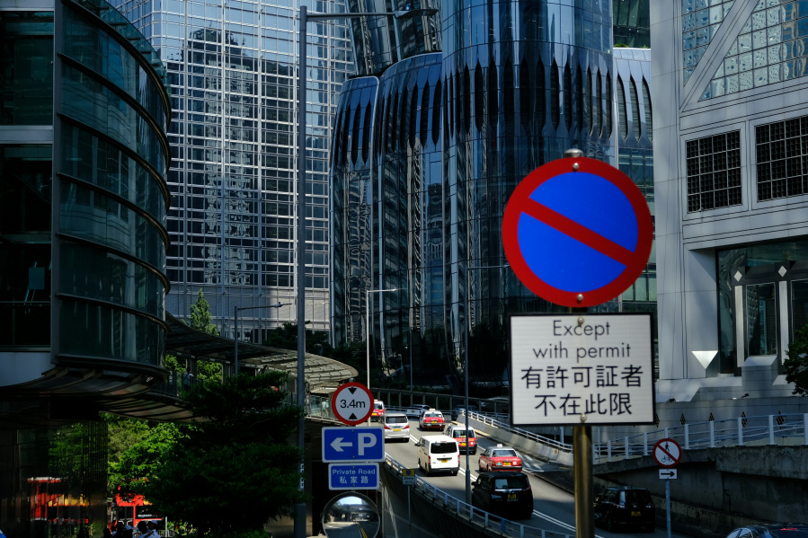

Unified Urban Intelligence
Connecting city services, infrastructure, and citizens through advanced data-driven systems.

AI-Powered Predictive Analytics
Our machine learning algorithms process vast amounts of urban data to predict traffic patterns, utility demand, and public safety needs before they become critical issues.
- Real-time anomaly detection
- Predictive maintenance scheduling
- Demand forecasting models
IoT-Enabled Infrastructure
Deploy our network of smart sensors across your city to monitor everything from air quality to waste management in real-time.
- Plug-and-play sensor nodes
- Self-healing mesh networks
- 5G-ready connectivity

Digital Twin City Modeling
Create a virtual replica of your city to simulate scenarios, test solutions, and optimize urban planning without real-world risks.
- 3D city visualization
- Scenario testing engine
- Impact forecasting

Public Service Automation
Streamline municipal operations with intelligent automation that reduces costs and improves service delivery.
- Smart routing for services
- Automated incident response
- Citizen request tracking
Ready to Transform Your City?
Our team of urban technologists is ready to help you implement these solutions.
Contact Our Team